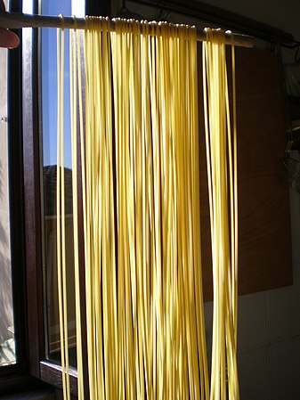
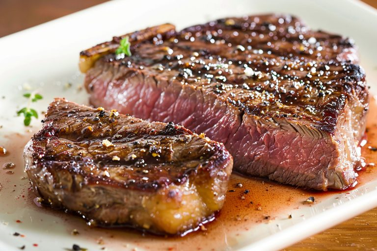
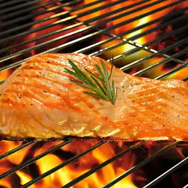
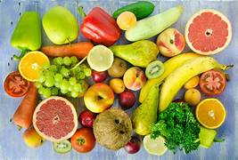

Gli spaghetti (AFI: /spaˈɡetti/) sono un particolare formato di pasta prodotta esclusivamente con semole di grano duro e acqua, dalla forma lunga e sottile e di sezione tonda.
La bistecca (dall'inglese beef steak, costola di manzo) è un tipo di taglio di carne, solitamente di bovino ma anche di cavallo, suino o altri animali, come la renna. Il taglio viene effettuato solitamente in modo perpendicolare ai muscoli dell'animale in modo da aumentare la tenerezza della carne. La bistecca, che si presenta generalmente con l'aspetto di una "fetta" di carne, viene cotta e consumata principalmente alla griglia, ai ferri o fritta. I tagli della zona lombare o del costato vengono cotti molto velocemente per evitare l'indurimento della carne, mentre i tagli di collo o girello vengono cotti lentamente o inteneriti meccanicamente.
Il nome volgare salmone può essere utilizzato per diverse specie ittiche della famiglia Salmonidae.
L'insalata è una preparazione alimentare composta da più ingredienti, principalmente verdure crude o cotte, caratterizzata dal fatto di essere condita a crudo e condita solitamente con una miscela[1] di sale da cucina e olio d'oliva e/o aceti o spremuta di limone e/o altri ingredienti opzionali come pepe, origano, aglio, prezzemolo, rafano e altre spezie aromatiche fresche o essiccate, ma anche con salse varie, come maionese, senape o salsa di soia.
Con la parola frutta si raggruppano comunemente vari tipi di frutto commestibili. Tra questi sono compresi alcuni che non sono propriamente frutti, come le pomacee, ed escludendone altri come le zucche che sono ortaggi in base al tipo di uso che se ne fa nell'alimentazione.
